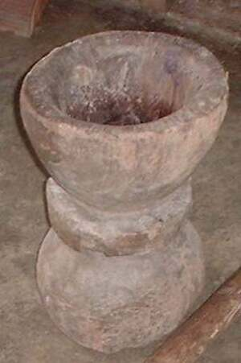

lesung 
/lɔsuŋ/
n.
“mortar”
n.
mortar
Wrd.Gloss: mortar
Cult. The mortar is carved out of a single piece of hardwood. It stands about two feet high and the middle is hollowed out. Rice (paley), corn (aheley), peanuts (meni), etc. can be pounded by one or two people using wooden poles (andu).
Ka lesung iyan ka binayuan ne kayu ne innimu ligkat te mabasag wey makehal ne kayu ne daruwa peendiyè te hep-at ne dangew se kalayat wey warè minsan mamenu karakel. Iglungahan ka taliwarè te kayu pinaahi te hapuy wey egkuliteken te ugpit/puruk su eyew diyè igtahù ka minsan nekey ne egbinayuwen. Seini ka galingan te me menubu wey ka tagsè talaanak due iya kayi.
Ka lesung iyan ka egbinayuwan te paley te Matisalug su warè galingan dan.
The mortar is the material used by Matigsalug people to pound grains/palay for they don't have a grinder.
cf. andu —pestle
Eng. mortar
Tag. lusóng
Ceb. lusong
Ilo.: álsung
Tigwanon: lesung
Binukid: lesing
WBM: lesung
Ilianen: lesing
Dibabawon: lesung
Cotabato Manobo: lesung
Sarangani: lesong
Cagayano: lassung
Kinamigin: lusung
Tagbawa: lisung
Proto: lesung
OCM: Utensils (415)
Online dict status: -
Usage level: B
Updated by: RJH,TME.RJH
Last updated: 10/Feb/2017
This page last updated: 28-Dec-2019
Copyright © 2009-2014, Matigsalug Language Christian Association, Inc